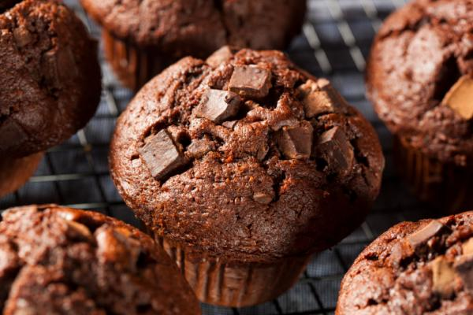

Muffins de Chocolate
INGREDIENTES
- 2 huevos.
- 180 g azúcar.
- 100 ml aceite.
- 110 ml leche.
- 30 ml agua hirviendo.
- 140 g harina.
- 5 g bicarbonato de sodio.
- 1 cdita polvo de hornear.
- 1 pizca sal.
- 40 g cacao amargo Chocotikart.
- 100 g chispas de chocolate Chocotikart.
PASOS
- Batir los huevos por 5min y agregar el azúcar, seguir batiendo por 1 min más.
- Una vez batidos los huevos, agregar el aceite y seguir batiendo. Agregar la leche y batir.
- Luego agregar los secos tamizándolos previamente 3 veces e ir batiendo.
- Agregar el agua hirviendo, esto es porque el cacao reseca los bizcochuelos y el agua hirviendo ayuda a humedecerlos.
- Agregar las chispas, pero hay que guardar aprox. 30g de las chispas y mezclar con espátula, para que no se aplasten.
- Poner en los pirotines, colocados en una bandeja o encimados.
- Agregar las chispas que reservamos y llevar al horno 180° de 25-30min.
- Una vez listos dejar enfriar un poco ¡Y listo!
- Si queres podes poner más cacao, pero tené en cuenta que el total entre la harina y el cacao
debe ser de 180g.
